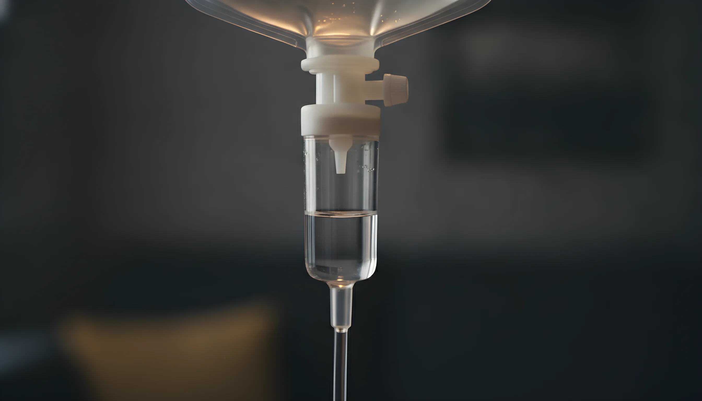
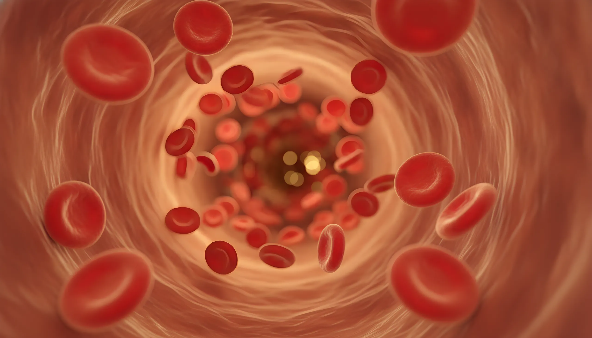
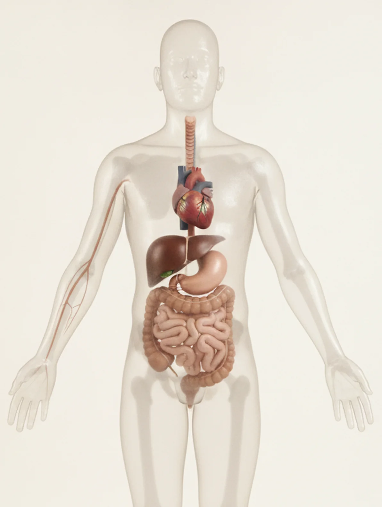

Health quiz
About three minutes: symptoms, medication, allergies and history.
21 questionsfive parts
Answer a short health quiz, get a protocol reviewed by a registered physician, and have a nurse give it in your own home. No walk-in, no guesswork.
Before a needle
Every protocol is read and signed by a physician registered with the Karnataka Medical Council. Their name and number are on your report. Nothing is given on a quiz score alone.
A 15-minute phone call with your physician
One approval covers all bookings for 90 days
The formulary
Every bag is 500 mL and every drip needs a physician’s approval. Choose by goal, open one up, or put up to three side by side.
One carrier
Follow one dose
Every bag is 500 mL, and every drip needs a physician’s approval.
Inside the carrier
, then each ingredient.
Every dose and batch number goes on your report the same day.
The line
The drip runs while you sit back.
, .
The arm
One small cannula, in a vein in your arm.
The nurse cannot place it before your consent is recorded.
The bloodstream
Straight into the bloodstream.
No stomach, gut or liver on the way. Illustration, not to scale.
Follow one dose



From a three-minute quiz to your report in your account, the same day.
About three minutes: symptoms, medication, allergies and history.
A registered doctor approves a protocol, changes the doses, asks for more, or declines.
A slot in your zone. Free to move up to 4 hours before.
The nurse checks the seal and every vial’s expiry in front of you. Before the sealed kit is opened, the nurse confirms the anaphylaxis kit is present and in date.
Baseline vitals first, then a 29-step checklist that cannot be skipped. On the day: consent, then one small cannula in a vein in your arm. The drip runs while you sit back.
Every dose and batch number in your account, the same day. Vitals before and after, and aftercare notes.
No step is skipped. If any step says no, there is no drip.
Vitals, every session
Four vitals are checked before anything is infused. Drag them yourself: a reading outside its range stops the drip until the physician clears it.
The nurse can go on to the next step of the checklist.
Where needed: G6PD screening for Immune Shield, and a ferritin result within 90 days for Iron Restore.
The software will not move to a step while the one before it is open. The nurse cannot place the cannula before consent is recorded. Try to skip one.
Batch numbers are recorded against your session. If a manufacturer recalls a batch, everyone affected can be named the same day.
Before, during and after, set against the alternatives.
Before
A shelf of supplements you are not sure you absorb, and a tiredness nobody has measured.
The session
Sixteen markers reviewed by a registered doctor. A council-registered nurse at your home, working a 29-step checklist.
After
Vitals before and after, every dose, every batch number and aftercare notes, in your account the same day.
IV or tablets?
By tablet · part of it is absorbed
By IV drip · all of it enters the blood
Illustration, not to scale. What remains by mouth varies by nutrient, dose and person.

Tablets are enough for many people with a varied diet and a healthy gut, and are usually what a doctor tries first.
IV is a medical procedure. There can be bruising where the cannula went in or, rarely, an allergic reaction.
Where
We cover 14 zones across Bengaluru. Enter your pincode and you get a straight yes or no, not a waitlist.
Each zone has its own hours, listed beside it.
Price
The price is known before the nurse arrives. Pick a drip to see what goes in.
Inside 4 hours it costs ₹500, because the nurse is already dispatched with your batch drawn.
For example, because of out-of-range vitals.
One physician approval covers all bookings for 90 days.
Questions people ask
The quiz takes about three minutes. If any step says no, there is no drip.
Take the health quiz · 3 min21 questions. One approval covers all bookings for 90 days.